TrueNAS
Objectif et environnement
Objectif
L’installation et configuration d’un serveur TrueNAS
Environnement
Matériels :
Dell PowerEdge r240 avec Proxmox 7.1-7
Adressage des VMS :
Réseaux : 172.16.0.0/16
Serveur SRV-NAS : SRV-PBX-VOIP 172.28.1.209/16
Documentation :
Processus
Installation de trueNAS

Je choisis la première option
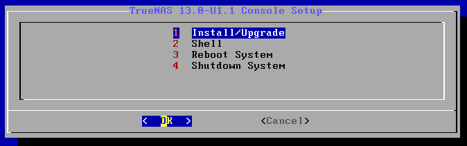Je choisis la première option
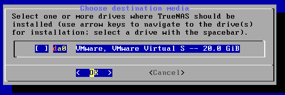
Je sélectionne le disque sur lequel l’os va s’installé
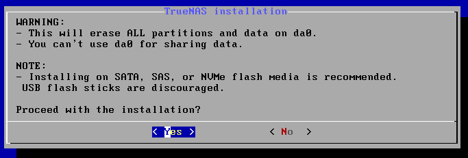Je choisie « yes »

Je mets un mot de passe au compte root
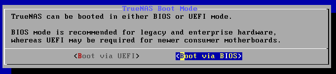Je choisie de boot en BIOS, puis j’attends la fin de l’installation
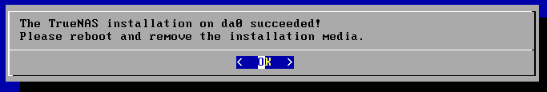Je redémarre le serveur NAS
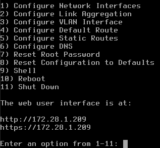
Je configure l’adresse IP du NAS en sélectionnant l’option 1, puis je suis les instructions.
J’ai aussi configuré les routes statiques et l’adresse de DNS.
Ci-dessous l’interface web. |
|---|
 |
 Je tape l’adresse IP du serveur
NAS pour accéder à sa page web de gestion et je me connecte avec
l’utilisateur root.
Je tape l’adresse IP du serveur
NAS pour accéder à sa page web de gestion et je me connecte avec
l’utilisateur root.Création d’un volume de stockage + dataset
Dans le menu à gauche dans Stockage > Volumes.
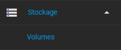
Je créer un nouveau volume.
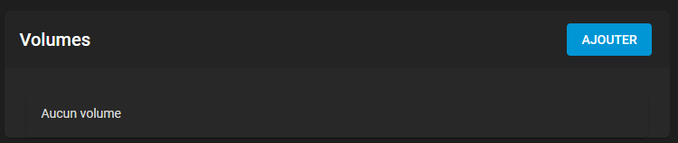
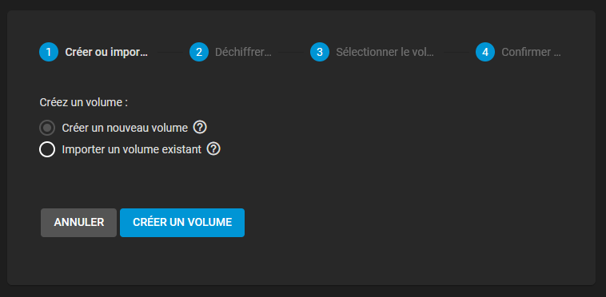
Je nome le nouveau volume et je sélectionne les disques disponibles qui y seront rattaché.
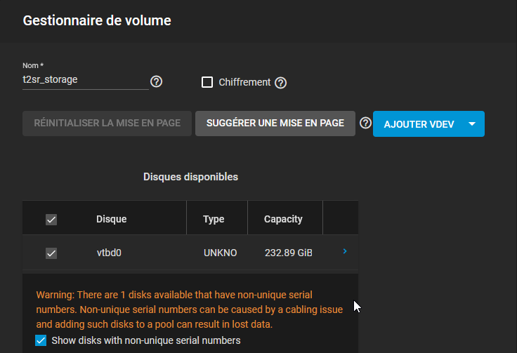
Pour le TP nous avons ajouté un troisième disque a notre serveur qui est externe en USB.
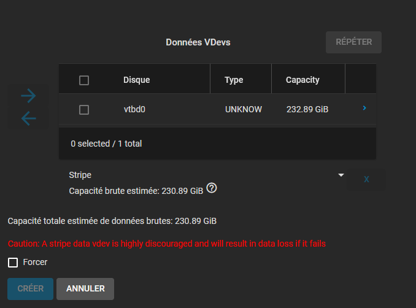
Je sélectionne un seconde fois le disque et je force la création du vdev du volume.
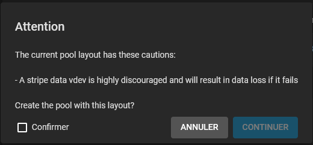 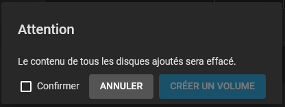A deux reprises j’ai un message me demandant si je suis sûr d’effectuer la manipulation, chose que je confirme.
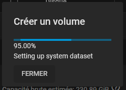Le volume est en cours de création, cela peut prendre plusieurs minutes.
Une fois le volume créer, je créer mes dataset.
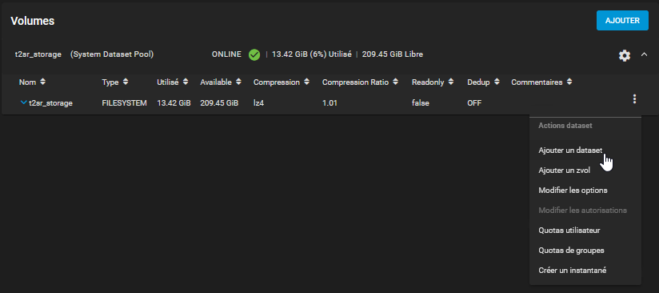J’ai créé deux dataset, ISO et BACKUP avec la même configuration.
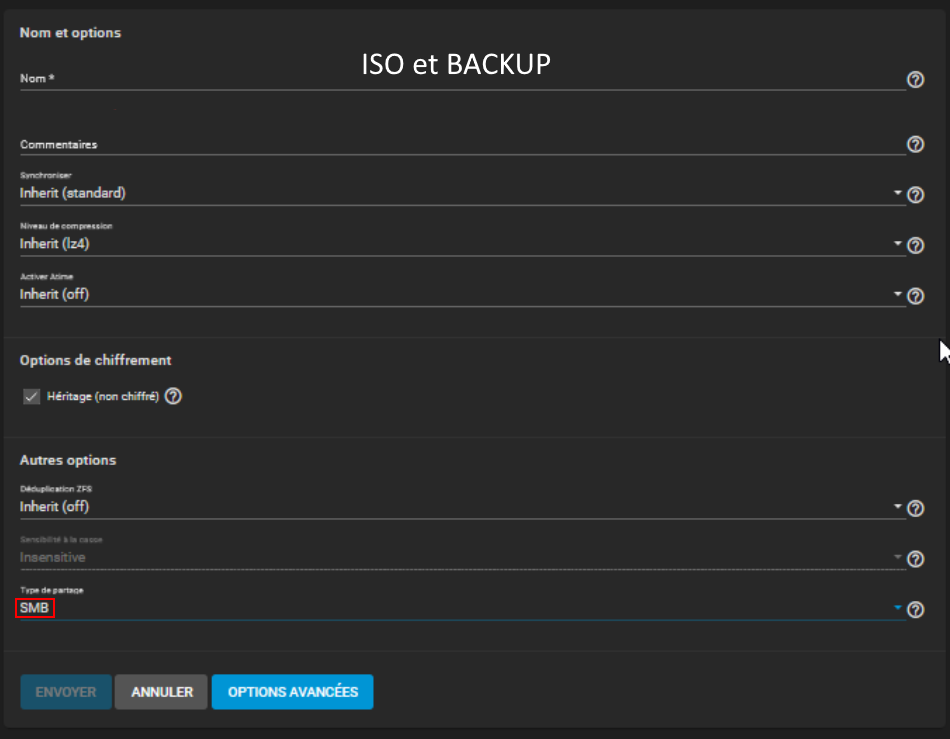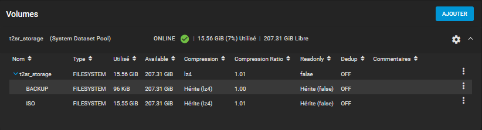Il faut changer le type de partage en SMB
Mes deux dataset son créer.
Mise en place du partage Windows (SMB)
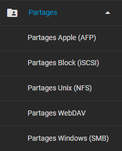Dans le menu à gauche, Partage & SMB
Je créer un partage pour chaque dataset que j’ai créé dans le volume t2sr_storage.
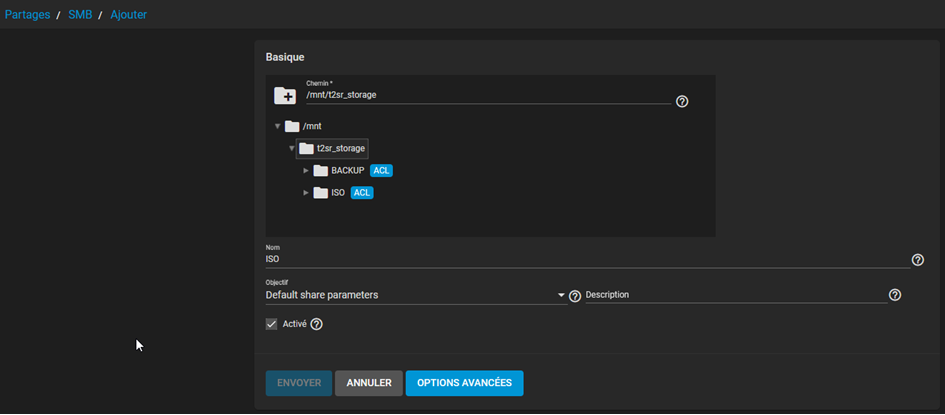 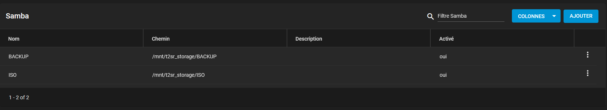Mes deux partages sont créés et activé.
NAS et AD

Dans le menu à gauche, Services d’annuaire & Active Directory
Je renseigne les informations pour joindre le domaine.
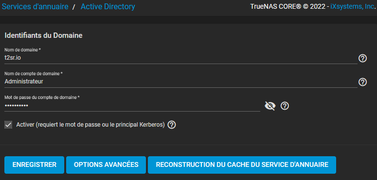Cela permet au NAS de connaitre les utilisateurs de l’AD et leur permet de se connecter à lui sans devoir passer par un compte local propre au NAS.
TEST + Conclusion
Je me connecte au partage :
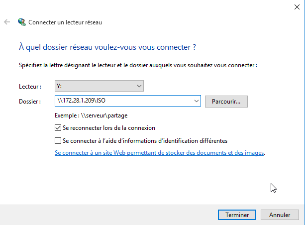 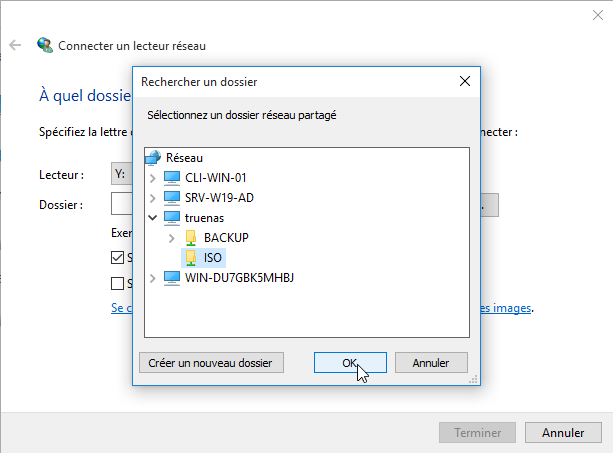 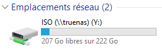
Connection au partage réussi.
Intégrer TrueNAS dans Active Directory

NB : le procédé d’intégration est expliqué dans le chapitre Active Directory.
Conclusion
True NAS est un excellent choix pour créer son propre serveur NAS. Sécurisé et facile à mettre en oeuvre.